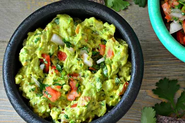

Guacamole

Description
Guacamole is an avocado-based dip or spread that originated in Mexico.
It's typically made with mashed avocado and lime juice, then seasoned with
salt and cilantro. Guacamole often contains tomatoes and onions.
Ingredients
- Avocados
- Lime
- Salt
- Vegetables
- Herbs and spices
Steps
-
Mash avocados, lime juice, and salt together in a medium bowl; mix in
tomatoes, onion, cilantro, and garlic. Stir in cayenne pepper.
- Serve immediately, or cover and refrigerate for 1 hour for improved flavor